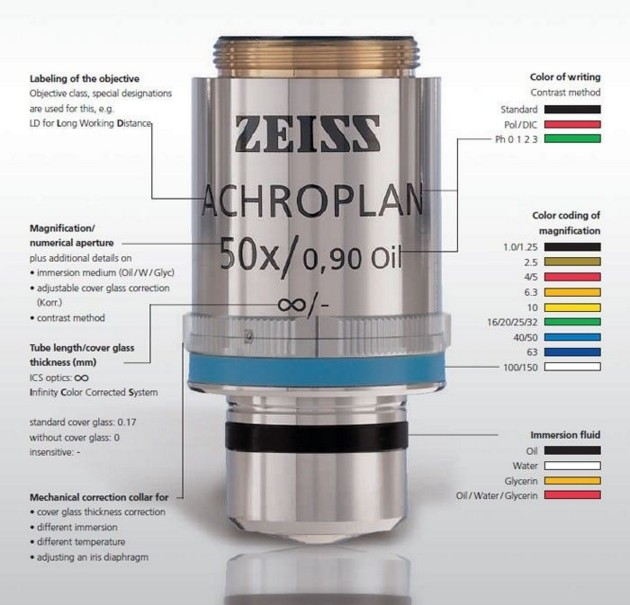

|
物镜
|
物镜是显微镜中最重要的部件之一。在 WITec 系统中，它们决定了视频图像的放大倍数和例如拉曼图像的分辨率。物镜经过无限远校正，意味着光束在显微镜内部是平行的。请确保以正确方式使用显微镜物镜。 大多数物镜仅设计用于空气环境。 一些物镜已针对盖玻片使用进行了校正， 并需要浸没介质才能正常工作。

图 1：Zeiss 物镜的标注（来源：https://www.zeiss.com/microscopy/int/products/microscope-components/objectives.html）
放大倍数是针对像平面（摄像机或收集光纤位置处）给出的。数值孔径（NA = n · sin α）描述了物镜的分辨能力。此外，物镜上还印有工作距离（单位为 mm）。